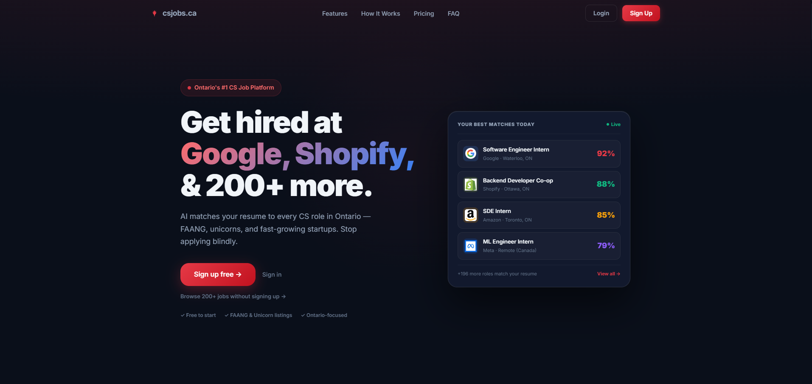
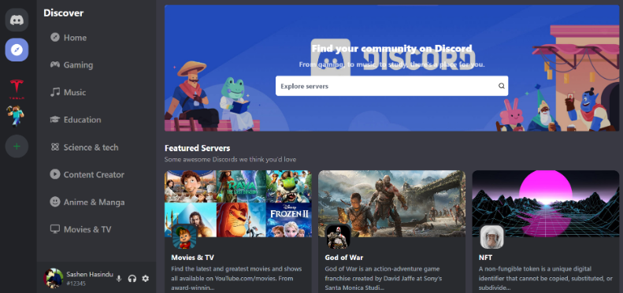

Building scalable, production-grade systems at an AI startup and shipping
full-stack features for a 3,000+ member student platform. Proficient in
Python, Django, REST APIs, and cloud-native tooling.
Launched a job aggregation platform serving 300+ concurrent users. Engineered Python web scrapers, Flask REST APIs with SQLite backend, deduplication pipelines, and a production-ready job board UI with client-side search and filtering.
2026 – Present
Vosyn
Back-End Developer Intern — AI & Cloud Systems
Internship
Architected REST APIs using Python, Django, DRF, and Flask for AI-driven backend workflows. Designed PostgreSQL and NoSQL schemas, containerized services with Docker, and integrated backends with React frontends. Deployed on Linux with Bash scripting.
2025 – Present
Laurier Computing Society
Full-Stack Developer
Volunteer
Shipped full-stack features in Python, JavaScript, and HTML/CSS for a 3,000+ member student platform. Built responsive UI components, Flask/Django REST endpoints, and integrated frontend with backend APIs for real-time content rendering.
2024 – 2025
Wilfrid Laurier University
B.S. Computer Science — 3.0 GPA
Education
Coursework in Data Structures & Algorithms, Object-Oriented Programming, and Intro to Programming. Expected graduation 2028.
2023 – Present (Expected 2028)
RECENT
PROJECTS

01
Canadian CS Internship Platform
PythonFlaskSQLiteREST APIsWeb Scraping

02
Discord Clone
TypeScriptReactTailwindSupabasePrisma
03
Personal Portfolio — mazentalsam.com
React.jsJavaScriptHTML / CSS
⚡ Always exploring new ideas — stay tuned for more!
THOUGHTS &
DEVLOG
StartupMar 2026
Founding csjobs.ca: Building Ontario's #1 CS Job Platform
How I built a job aggregation platform from scratch — Python scrapers, Flask APIs, deduplication pipelines, and scaling to 300+ concurrent users.
Back-End Developer with hands-on experience building scalable, production-grade systems
at an AI startup and within a 3,000+ member student organization.
My passion for CS started from my dad's background in tech — that spark turned into
shipping real products used by real people.
Languages
Python
JavaScript
TypeScript
Java
HTML / CSS
Back-End
Django
Django REST Framework
Flask
REST APIs
Frontend
React.js
Tailwind CSS
Vanilla JavaScript
Databases & DevOps
PostgreSQL
SQLite
Supabase
Docker
Git
Linux / Bash
Postman
Prisma
Railway
● Open to co-op & full-time — Fall 2026
Let's build something remarkable together.
Looking for a back-end developer who ships fast, thinks in systems, and brings startup energy to every project? Let's talk.
Founded and launched a job aggregation platform serving 300+ concurrent users across the Canadian CS student community.
Engineered custom Python web scrapers, built Flask REST APIs with SQLite backend, implemented deduplication pipelines, and developed a production-ready job board UI with client-side search and filtering.
Full-stack real-time chat application with authentication, text channels, and audio communication.
Built with TypeScript and React, using Supabase and Prisma ORM for user profiles, server management, and message storage. Deployed to production on Railway.
Designed and built a personal portfolio site to showcase projects, skills, and professional experience. Built with React.js and JavaScript.
Fully responsive UI with modern design principles, optimized for performance and cross-browser compatibility. Deployed and maintained live at mazentalsam.com.
Founding csjobs.ca: Building Ontario's #1 CS Job Platform
Back in early 2026, I was frustrated. Every CS student I knew was using five different job boards, manually checking each one every morning. So I built one that checks them all.
csjobs.ca started as a weekend project and turned into a full production platform serving 300+ concurrent users. Here's what went into it.
The Architecture
The core is a set of Python web scrapers that hit 10+ job boards on a schedule. Each scraper is isolated — if one breaks (and they always eventually do), the rest keep running. The scraped data flows into a Flask REST API with a SQLite backend.
The biggest challenge was deduplication. The same posting shows up on Indeed, LinkedIn, Glassdoor, and the company's own site simultaneously. I built a hashing pipeline that fingerprints each job by company, title, and location — so you only ever see it once.
Scaling to 300+ Users
SQLite's write concurrency becomes a bottleneck fast. I'm migrating to PostgreSQL before the public launch. The Flask app itself is stateless, which makes horizontal scaling straightforward — no session state to manage.
The frontend is vanilla JS with client-side search and filtering. No framework. Fast load times, zero build tooling overhead.
What I Learned
Design for deduplication from day one — retrofitting it is painful. Rate limiting on scrapers isn't optional; you will get IP banned. And vanilla JS + server-side rendering outperforms a heavy framework for content-heavy sites.
csjobs.ca is live. Built for Canadian CS students, by one.
Shipping AI Backends at Vosyn: DRF, Docker & Production Scale
My first week at Vosyn, I got handed a Django REST Framework codebase with 47 open endpoints, no documentation, and a sprint deadline. Best onboarding I've ever had.
DRF at Scale
Django REST Framework is deceptively simple to start and deceptively hard to master. The biggest wins came from custom serializer validation for AI payload schemas — the shapes change constantly as models evolve. I also implemented ViewSet-level caching to avoid re-running expensive inference calls, and fixed N+1 query patterns across the hot paths using select_related() and prefetch_related(). One bad query in an AI pipeline can add 800ms to every request.
Docker is Non-Negotiable
Every service runs in a container. Before Docker, "works on my machine" killed two sprint cycles. After: new environment setup takes 10 minutes. I wrote multi-stage Dockerfiles that kept production images lean — no dev dependencies, no test files — cutting image size by over 60%.
PostgreSQL vs NoSQL
For AI workflows, you need both. Structured user data, auth, and logs go to PostgreSQL. Unstructured model outputs, embeddings, and metadata go to NoSQL. Knowing when to use each is the actual skill — not picking one and forcing everything into it.
What I'd Tell My Past Self
Don't write raw SQL unless you have to. Use the ORM. But understand the SQL it generates — run EXPLAIN ANALYZE on every query that touches a hot path. Shipping at an AI startup means requirements change when the model changes. You build for flexibility, not rigidity.
Real-Time Chat from Scratch: Building a Discord Clone
I built a Discord clone to learn TypeScript properly. Three weeks later I had real-time messaging, authentication, and a genuinely usable app deployed to production. Here's what I learned.
The Stack
TypeScript + React on the front, Supabase for the database and real-time subscriptions, Prisma ORM for type-safe queries, deployed on Railway. This stack is genuinely fast to ship with — Supabase gives you auth, a Postgres database, and real-time out of the box.
Real-Time Messaging
Supabase's real-time engine uses PostgreSQL's LISTEN/NOTIFY under the hood. Setting up a subscription is a few lines of code. The hard part isn't the subscription — it's handling optimistic updates correctly. When a user sends a message, it should appear instantly in the UI before the server confirms it. If the server rejects it (auth failure, rate limit), you need to roll it back cleanly without breaking the message order.
Why Prisma
If you're writing TypeScript and not using Prisma, you're working too hard. The schema is the single source of truth for your entire data layer. The generated types mean you catch database shape mismatches at compile time — not at 2am in production after a schema migration.
What I'd Do Differently
The auth flow ended up too tightly coupled to UI components. I'd move all auth logic to a dedicated context layer from day one instead of refactoring mid-project. Also: test your real-time logic under poor network conditions from the start. Adding offline resilience as an afterthought is painful.
The app is live on Railway. It works. And I understand TypeScript significantly better now.